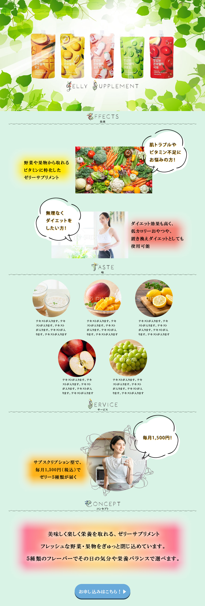

商品らしさが伝わる配色
ミントグリーンをベースに、フルーツを連想させる鮮やかな色をアクセントとして使用し、みずみずしさと親しみやすさを表現しました。
Project 02 / Landing Page
美容や栄養を毎日の習慣に取り入れたい方へ向けた、サブスクリプション型ゼリーサプリメントのLPデザインです。

Final Design
Overview
Concept
おいしく、楽しく、
毎日の美容と栄養を
無理なく続ける。
肌の調子やビタミン不足が気になる方、食生活を整えながら無理なくダイエットを続けたい方へ、商品の特徴と定期購入の仕組みを分かりやすく伝えることを目的に制作しました。
健康食品らしい安心感を持たせながら、堅い印象になりすぎないよう、果物や野菜の写真と明るい配色を使い、気軽に始められる雰囲気を表現しています。
商品の特徴、フレーバー、サブスクリプション内容、申し込み導線の順に情報を配置し、読み進める中で自然に購入を検討できる構成を意識しました。
Design Points
ミントグリーンをベースに、フルーツを連想させる鮮やかな色をアクセントとして使用し、みずみずしさと親しみやすさを表現しました。
肌トラブル、栄養不足、無理のないダイエットという悩みを最初に示し、商品がどのような方に向いているかを直感的に伝えています。
商品の魅力を伝えた後に料金とサービス内容を提示し、申し込みまで自然につながる導線を意識しました。
Design Gallery